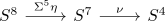
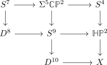
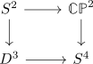
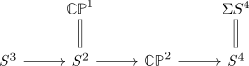
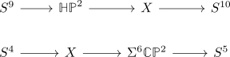
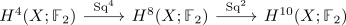
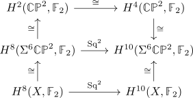

first hopf map after second hopf map and its suspension not nullhomotopic
Proposition
The maps

and its suspension
are not nullhomotopic.
Proof
a)
Assume that the first map is nullhomotopic. Then consider the homotopy pushout squares

where the big top one is a a homotopy pushout by construction of the quaternionic projective space, the big right one is a homotopy pushout by definition of $X$. Here the left square is given by the five-fold suspension of

which is a homotopy pushout by the coexact puppe sequence

(cf. quaternionic projective space)
which gives homotopy cofibration sequence

resp. coexact puppe sequences
This shows that
see: singular cohomology ring of the complex projective space & suspension isomorphism of singular cohomology
Here $\mathbb{HP}^2 \rightarrow X$ induces an iso on $H^k(-,\mathbb{F}_2)$ with $k \leq 8$ and $X \rightarrow \Sigma^6 \mathbb{C}\mathbb{P}^2$ induces an iso on $H^k(-,\mathbb{F}_2)$ for $k \geq 6$
It follows that

is a composition of isomorphisms, hence an isomorphism.
Here both components are isomorphism by square-likeness of steenrood operations & cup product pairing non degenerate & quaternionic projective space as orientable manifold resp. complex projective space as orientable manifold
naturality of the steenrod operation stability of steenrod operations

Then working the Adem relations out shows